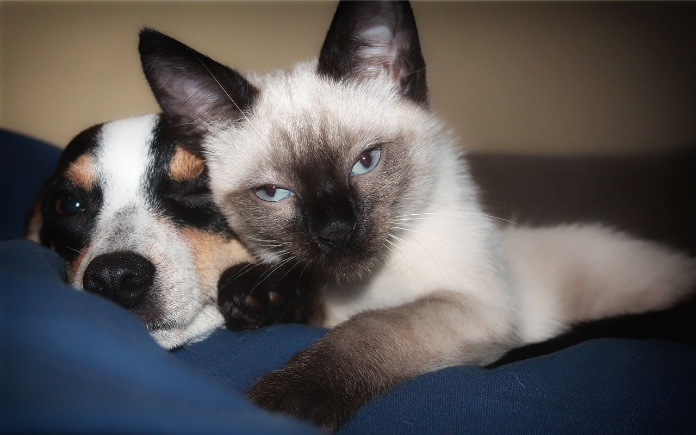

About Siamese Cats
Siamese cats are captivating creatures known for their striking blue almond-shaped eyes and sleek, muscular bodies. They have a short coat that's fine and glossy, with color points on their ears, face, paws, and tail, which contrast with a lighter body color. Originating from Thailand, formerly Siam, these cats are not only beautiful but also intelligent and affectionate. They are known for their vocal nature, often engaging in loud, long conversations with their humans. Siamese cats are social and thrive on interaction, so they're happiest in company. Their playful and curious nature makes them delightful companions.
